2.1 입력장치 접근성
모든 기능은 키보드만으로도 사용할 수 있어야 합니다.
키보드 사용 보장, 초점 이동과 표시, 조작 가능, 문자 단축키 등 다양한 입력장치로 콘텐츠에 접근할 수 있도록 합니다.
2.1.1. 키보드 사용 보장
모든 기능은 키보드만으로도 사용할 수 있어야 한다.
• 키보드로 접근 및 운용이 불가능한 경우
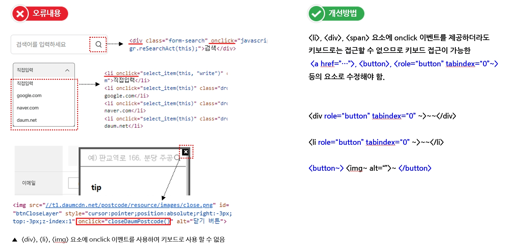• 키보드로 접근 및 운용이 불가능한 경우
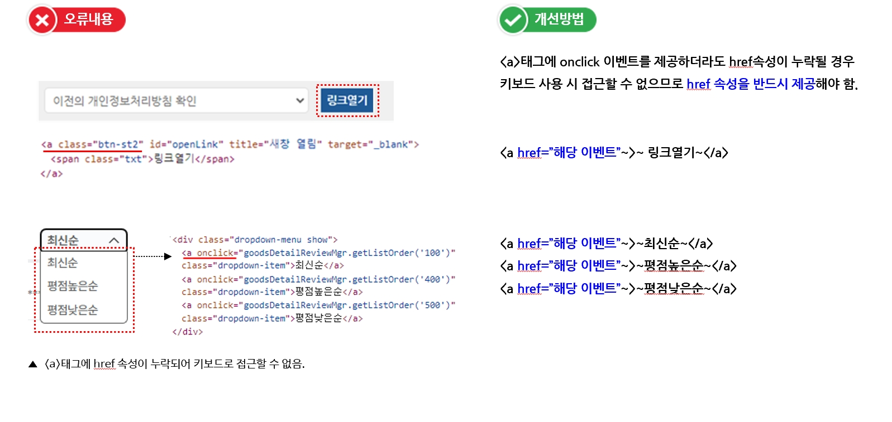• 키보드로 접근 및 운용이 불가능한 경우
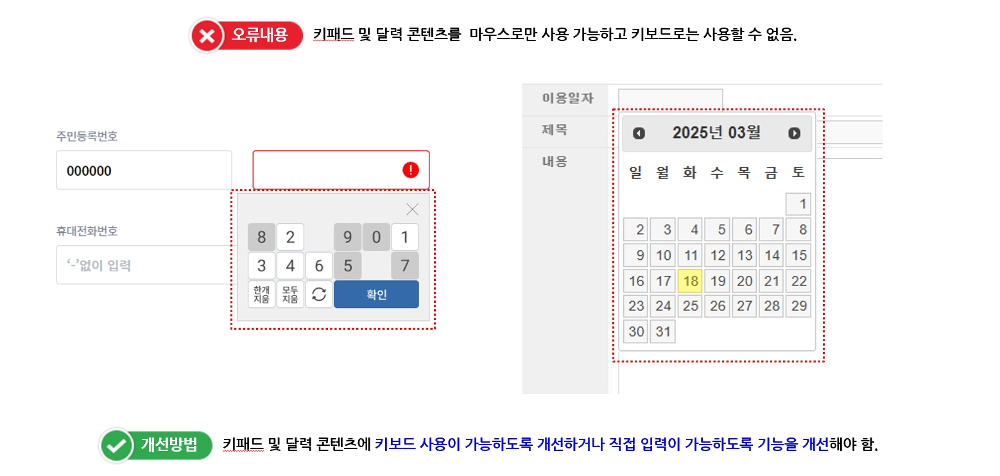• 키보드로 접근 및 운용이 불가능한 경우
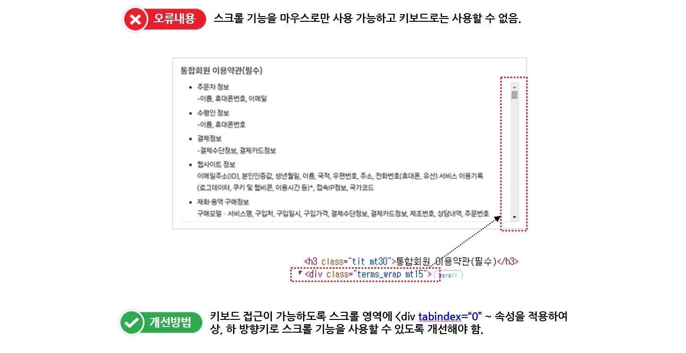2.1.2. 초점 이동과 표시
키보드에 의한 초점은 논리적으로 이동해야 하며, 시각적으로 구별할 수 있어야 한다.
• 초점의 이동순서가 논리적이지 않으며 일관성이 없는 경우
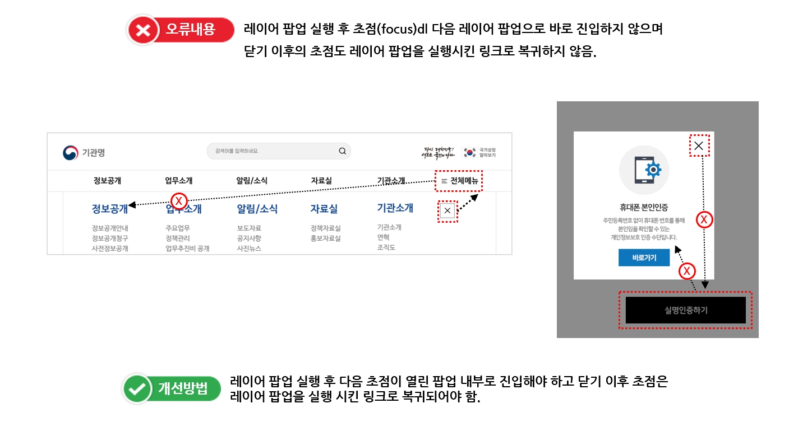• 초점 또는 키보드의 위치를 나타내는 요소가 시각적으로 표시되지 않거나 명확하지 않은 경우
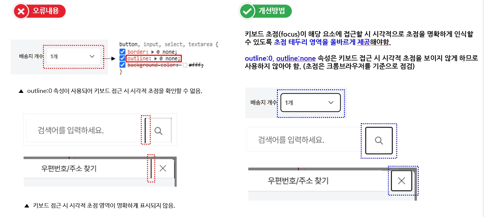• 초점 또는 키보드의 위치를 나타내는 요소가 시각적으로 표시되지 않거나 명확하지 않은 경우
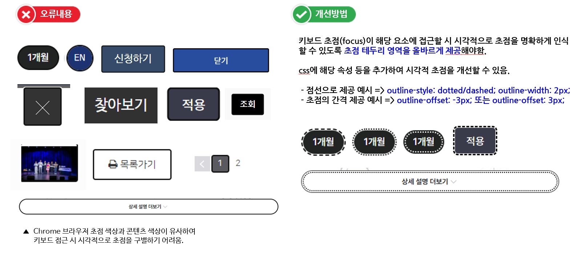• 텍스트 등 운용할 수 없는 요소에 초점이 되는 경우
• 화면에 보이지 않거나 의미 없는 개체에 초점이 이동되는 경우
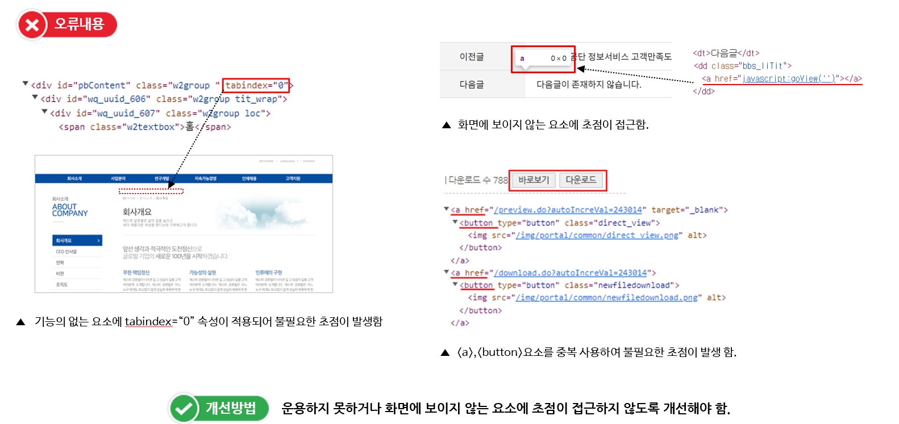• 키보드 조작이 불가능한 상태가 되어 다음 사용자 입력 또는 컨트롤 등으로 초점을 이동할 수 없거나 이전 페이지로 초점을 이동할 수 없는 경우
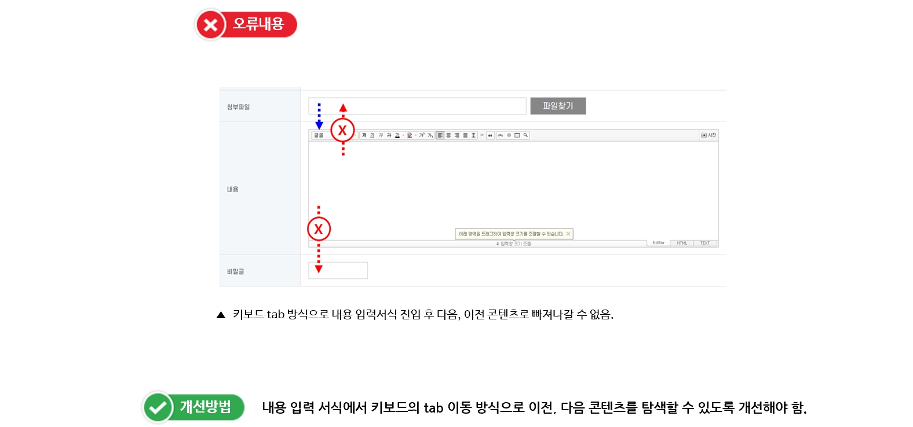2.1.3. 조작 가능
사용자 입력 및 콘트롤은 조작 가능하도록 제공되어야 한다.
• 컨트롤의 크기가 대각선으로 6.0mm 이상 제공하지 않은 경우
• 링크, 사용자 입력, 기타 컨트롤의 테두리 안쪽으로 1픽셀 이상의 여백을 제공하지 않은 경우
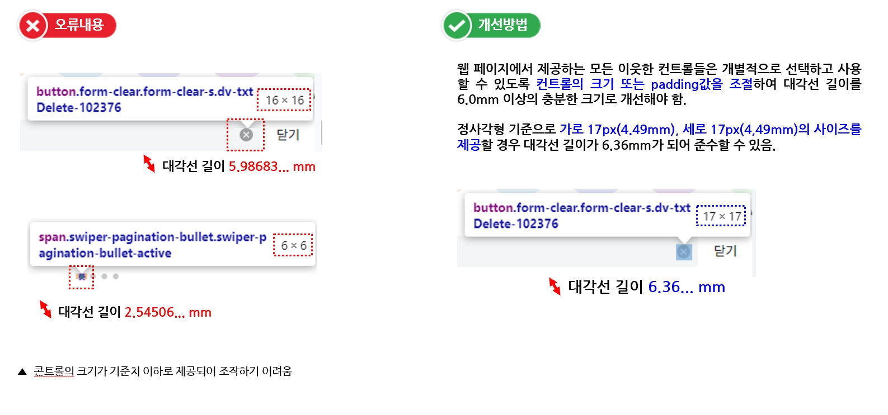
2.1.4. 문자 단축키
문자 단축키는 오동작으로 인한 오류를 방지하여야 한다.
• 단일 문자 단축키(예: 대/소문자, 구두점, 기호 등 글자키나 숫자키 또는 특수 문자키)를 제공하는 경우
• 오류를 방지하기 위한 방법 등을 제공하지 않은 경우
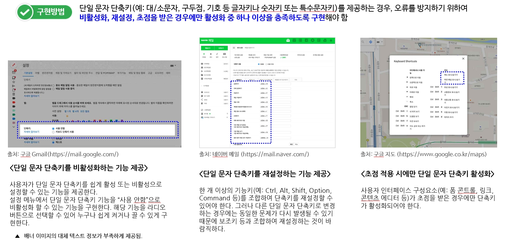 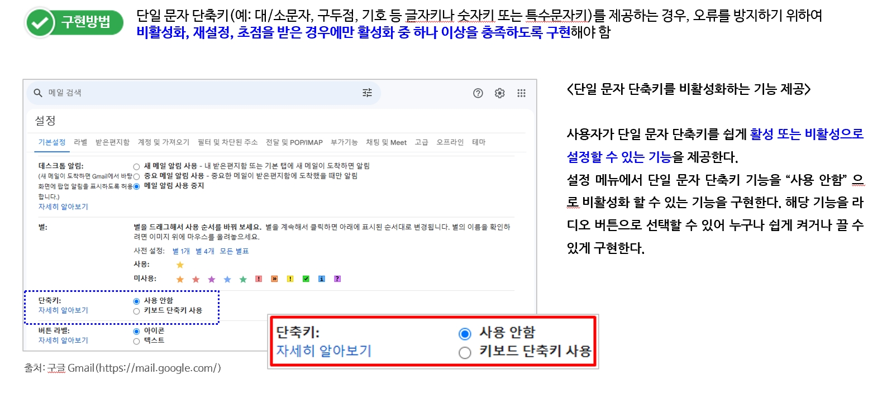 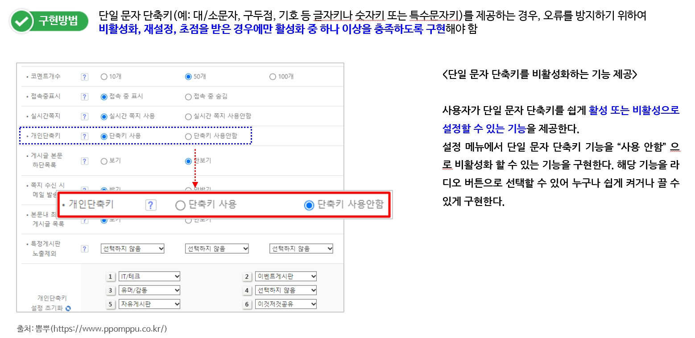 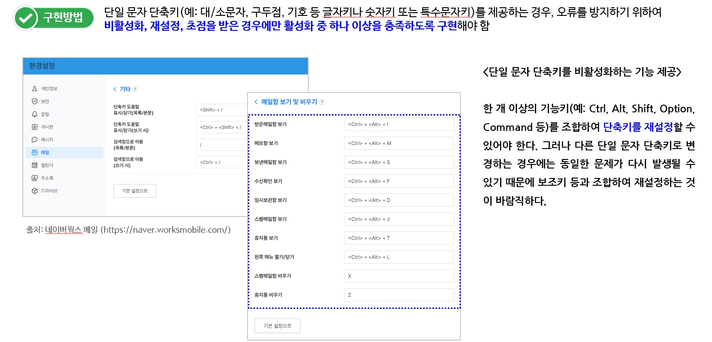 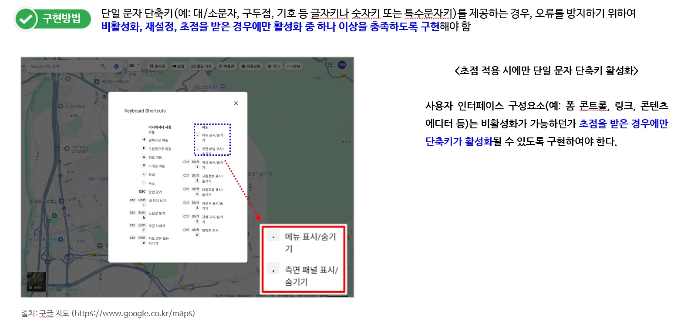